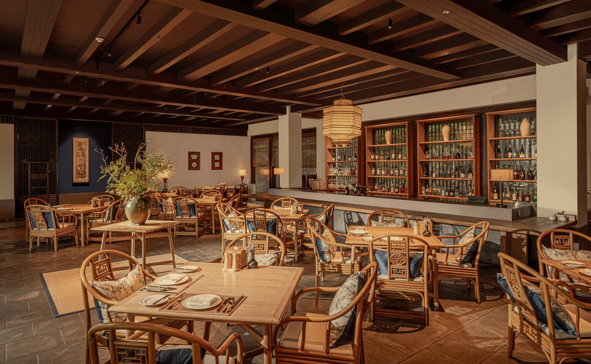
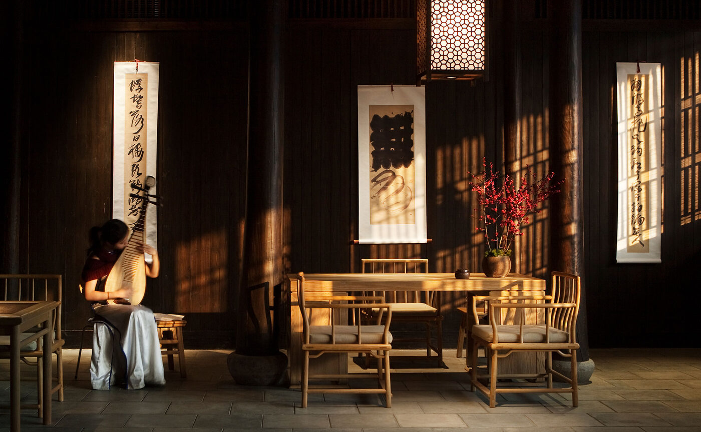

Fayun Place is the oldest building in a village Aman turned into a hotel in 2010. Until 16 October its timber halls are hung with cranes.
The exhibition is called Encountering Plumes: The Hundred Crane Album, and it is the first showing of a new series by the artist Lu Shang. Cranes cross the paper in ink, singly and in flocks, the old symbol of long life and of a mind lifted clear of the ground. A calligraphic inscription by the abbot of Lingyin Temple, a short walk down the lane, hangs with them. The dancer Li Xiang curated it and brought a choreographer's eye to the order of the rooms. Aman runs a show like this at Fayun Place every quarter; this is the autumn one.
Fayun Place itself is a two-storey timber hall from the 1880s, with a library, a lounge and a room for calligraphy lessons. Around it lie the 46 rooms, suites and villas of Amanfayun, each one a former dwelling of the families who picked Longjing tea on these slopes. Some are more than a century old. Jaya Ibrahim, who designed the interiors, decided the village needed keeping rather than improving: clay tile roofs, walls of brick and earth, dark timber frames, stone floors. Every room has a tea station stocked with leaves from the grounds.
Seven temples
The valley sits six kilometres from West Lake, on 14 hectares of tea bushes and bamboo. A stone path runs from the village to Lingyin Temple, founded in 326 AD, and to Yongfu beside it; seven temples in all lie within walking distance, on the pilgrimage circuit that gave the place its purpose long before it had guests. Monks from the seminary next door use the same lanes. North Peak rises 300 metres above, with Lingshun Temple at the top and the carved grottoes of Feilai Feng on the way up.
Entry to Lingyin and Feilai Feng is free, but China's real-name system applies. A reservation goes through a WeChat or Alipay mini-program at least a day ahead, and the gates open from 7.30am to 5.30pm. The tea is the other pilgrimage. West Lake Longjing grows inside a protected 168-square-kilometre zone, picked by hand and pan-roasted in small batches by roasters who press the leaves against woks heated past 200 degrees with their bare palms. The walk to Longjing Village crosses nine streams on stepping stones; spring is harvest, autumn is quiet.

Yuan, the renamed main restaurant above the reflecting pond, Amanfayun · Courtesy of Aman
Yuan
The dining pages were rewritten in August. The Restaurant, which for years leaned Western in a village that did not, has become Yuan. It is reached by a short climb through the trees and looks over a reflecting pond. The kitchen now works from the terroir of Jiangnan, the rice-and-water country south of the Yangtze, with Chinese produce and current technique, and it runs from breakfast through lunch, afternoon tea, dinner and drinks. The Steam House keeps to dumplings and village steamed dishes, cooked the old way in a semi-open kitchen with a courtyard for warm evenings. The Café bakes bread and cakes and packs picnics.
Private dinners can be laid on a terrace above the forest or inside Fayun Place, under the cranes. Non-residents are welcome at all of it, subject to space. Aman's phrase for the arrangement is a sense of community, which is to say the valley gets visitors who never sleep there.
The cranes leave on 16 October. The tea bushes, the monks and the nine streams stay.
The Splendid EditThe calendar
Mid-Autumn Festival falls on 25 to 27 September this year. Aman's programme for the holiday in Hangzhou leans on the temple routes and on Fayun Place rather than on mooncakes; the mooncakes are at Amanyangyun, outside Shanghai. Hangzhou East station is under an hour from Shanghai Hongqiao by high-speed rail, which puts the village within reach of anyone in the city for October's shows. The airport is about an hour away and the centre of Hangzhou 20 minutes.
Three offers fit the season. Sanctuary of Blessings is two nights with a monk-led temple tour and blessing, a Zen vegetarian meal, a herbal bath and access to Feilai Feng and the Rock Buddha. Discover Hangzhou needs three nights and adds a Chinese dinner and private guided tours, Nine Creeks and Lingyin among them. Extend Your Stay is three nights for the price of two, with breakfast and a daily cultural session at Fayun Place, which for the next five weeks means the cranes.

Afternoon in Fayun Place, the 1880s hall at the centre of the village · Courtesy of Aman
Lu Shang's album will move on. The hall has stood since the 1880s and the temples since the fourth century. The village has been a hotel for sixteen years, which in this valley counts as recent.
Exhibition, dining and offer details from aman.com pages updated in August 2026. Longjing tea and village facts as reported by the South China Morning Post (June 2026) and Forbes Travel Guide. Mid-Autumn dates per Aman's autumn programme. Reservation rules for Lingyin and Feilai Feng as published by Amanfayun.
Photography courtesy of Aman — © Aman, Amanfayun